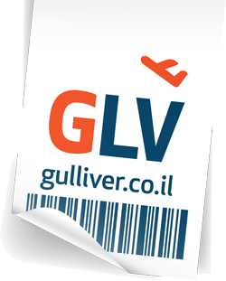
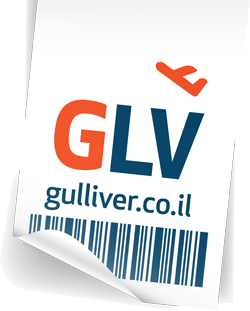

אבחון, יעוץ ומיון מקצועי בשווי 1000 ש״ח על חשבוננו
למה ללמוד אצלנו?
יש הרבה סיבות מדוע ללמוד אצלנו ומדוע אנחנו בית הספר להיי-טק הטוב בישראל. אבל בסופו של דבר
הכל נובע מסיבה אחת פשוטה:
אתם רוצים לפתוח קריירה בענף ההיי-טק והולכים ללמוד קורס רק מסיבה אחת - להתקבל לעבודה!
אנחנו בית הספר היחיד שמרוויח כסף רק ואך ורק אם אכן תתקבלו לעבודה.
בשאר השוק - תגיעו להתעניין בלימודים ותקבלו מאנשי המכירות יחס נפלא,
תשמעו הבטחות מהממות, ויופעלו עליכם
תרגילים שיווקיים מכל הבא ליד כדוגמת ״התחייבות לעבודה״ חסרת כל משמעות , ירשמו אתכם לקורס ויגבו מכם מראש שכר לימוד מלא. מרגע זה בגדול בית הספר עשה את שלו -
תצליחו, לא תצליחו, תמצאו עבודה, לא תמצאו עבודה זה כבר פחות משנה. בהתאם ברוב בתי הספר,
למרות מאמצים וכוונות טובות בדרך כלל, מתגלות הבעיות הבאות:
-
לא קיים תהליך אבחון ומיון אמיתי - ״יועצי לימודים״ הינם בעצם אנשי מכירות, המתוגמלים
על פי כמות הנרשמים, ובהתאם רושמים המון מועמדים שאין להם מראש סיכוי אמיתי להצליח
בקורסים ולהתקבל לעבודה בסיום ההכשרה.
-
קורסים הכוללים הרבה מועמדים חלשים מתנהלים בקצב איטי. כתוצאה מכך למרות כמות שעות
לימוד גדולה, ״על הנייר״, מספיקים לעבור על הנושאים בצורה שטחית בלבד.
-
ללא קשר לכישורי המדריכים ״על הנייר״, רוב המדריכים משתכרים נמוך יחסית למקובל בענף
ההיי-טק ואיכות ההוראה נפגעת בהתאם.
- בסיום ההכשרה גוף ההשמה המצומצם יוצא ידי חובה בפעילות מועטה, מול הבוגרים.
כתוצאה מכך, ברוב בתי הספר , בדרך כלל כמחצית התלמידים נושרים מהקורס עד שהקורס מסתיים,
וכמות הבוגרים שמצליחים להשתלב בתעשיית ההיי-טק במקצוע אותו למדו בקורס נמוכה מאוד. לצערנו,
בעידן הקורונה, מסתיים לעיתים קורס מבלי שאפילו בוגר אחד מוצא עבודה בתפקיד אליו הוכשר...
אצלנו לעומת זאת הכל הפוך - אם לא תתקבלו לעבודה בתחום אותו למדתם אצלנו
לא תשלמו בכלל שכר לימוד!
בהתאם הדברים מתנהלים בצורה הבאה:
-
כשתפנו אלינו תעברו תהליך אבחון, יעוץ ומיון מקצועי אמיתי. לצערנו רוב המועמדים מקבלים
תשובה ישירה וכנה שהתחום לא מתאים להם, שלא נקבל אותם לקורס וחבל על בזבוז הזמן שלהם.
-
רק מועמדים שאנחנו מאמינים שיש להם סיכוי טוב לסיים את הקורסים בהצלחה ולהתקבל לעבודה -
מתקבלים לקורסים. בהתאם הקורסים מתנהלים ברמה גבוה ובקצב מהיר והנושאים נלמדים יסודית
ומעמיקה.
-
צוות ההדרכה ושיטות ההדרכה הינן המתקדמות והחדשניות ביותר שכן המטרה העליונה שלנו
להכשיר את המועמדים ברמה הגבוה ביותר.
-
עם סיום ההכשרה נכנס לפעולה מנגנון ההשמה המקצועי והמתוקצב היטב שלנו ורק לאחר שתלמיד
מתקבל לעבודה בתחום אותו למד, אז ורק אז, סוף סוף אנחנו מקבלים את גמולנו - תשלום עבור
ההכשרה!
קצת עלינו
הייפראקטיב הוקמה ב- 2004 על ידי צוות בראשות טל שחור, יזם היי-טק ותיק.
צוות ההדרכה בחברה
הינו מהוותיקים והמנוסים בישראל. חלקנו הקמנו בעבר בתי ספר להיי-טק אחרים, חלקנו עבדנו בתפקידי ניהול,
שיווק והדרכה בבתי ספר אחרים.
לאורך השנים הכשרנו אלפי עובדים לענף ההי-טק בכל התמחות ומיומנות אפשרית.
לאורך השנים היינו
תמיד חדשניים - היינו הראשונים ללמד באופן מקצועי טכנולוגיות חדשות.
בית הספר היחיד שפיתח מערכות יעודיות ואימץ באופן מלא שיטות הדרכה מתקדמות מרחוק - שנים לפני שמישהו שמע
על נגיף הקורונה.
בשנות הפעילות הראשונות שלנו, העברנו קורסי הכשרה במודל המקובל בשוק - קורסים במגוון
תחומים גדול המקבילים לקיים בשוק ובתשלום מראש.
לאחר מכן הקמנו את מיזם ״תלפיות היי-טק״. תלפיות היי-טק מתמקד בהכשרה ארוכה ומעמיקה מאוד של אנשי פיתוח,במגוון גדול של טכנולוגיות ובמודל בו
התלמידים לא משלמים כלל שכר לימוד ומתחייבים לעבוד אצלנו מספר שנים.
כעת, לאור התקופה הקשה העוברת על המשק הישראלי, כאשר מאות אלפי מובטלים מחפשים כיוון מקצועי ונושאים עיניהם אל תעשיית ההיי-טק, החלטנו להטות כתף,
להיות החלוצים
ולהפוך לבית הספר היחיד, שמציע מסגרות הכשרה חסרות סיכון במודל ״לא עבדת לא שילמת״.
הייפראקטיב הינה ״מכללת בוטיק״ - אנחנו סלקטיביים מאוד ומטפלים בכמות מצומצמת של מועמדים שמשכנעים אותנו
שיש להם את מה שנדרש כדי לפתח קריירה משגשגת בענף ההי-טק.
אנו מלווים באופן צמוד את הבוגרים
גם לאחר שהתקבלו לעבודה לאורך הקריירה שלהם - בעצות טובות, הפעלת קשרים כשנדרש ושרותי סוכן אישי צמוד -
אנו רואים בבוגרינו משאב רב ערך לתעשית ההיי-טק והמשק הישראלי והם מקבלים את מלוא התמיכה לה הם ראויים
בהתאם.
שאלות שכנראה תשאלו
מה זאת אומרת לא עבדת? לא שילמת!
מאוד פשוט, ללא אותיות קטנות, רק כשתתקבל לעבודה תשלם על הקורס שלמדת. לא התקבלת
לעבודה? לא שילמת לנו שקל.
אני רוצה ללמוד אבל אין לי כסף, מה לעשות?
הכל בסדר. אצלנו זוֹ לא בעיה. לא תצטרכו לשלם מראש. לא תצטרכו לקחת הלוואה. שום דבר
תשלמו על הלימודים רק אחרי שתתחילו לעבוד וגם אז התשלום יתבצע בתשלום חודשי קטן קבוע.
איפה יש לכם סניפים/ איפה אתם מלמדים?
בתקופת הקורונה אנחנו מלמדים בכל מקום בארץ on line באמצעות שיטות הדרכה מתקדמות.
מתי מתקיימים מיונים לקורסים השונים?
מיונים מתקיימים כל הזמן באופן שוטף.
מתי מתחילים קורסים?
קורסים מתחילים לאורך כל השנה באופן שוטף. בדרך כלל, מועמדים שעברו את תהליכי המיון
בהצלחה, לא צריכים להמתין יותר מ-3-4 שבועות לתחילת ההכשרה.
האם ניתן לעבוד תוך כדי ההכשרות?
ניתן לעבוד תוך כדי ההכשרות אם בוחרים במסלול ערב.
איך אני יכול לדעת איזה מקצוע בהיי-טק מתאים לי?
הגש מועמדות באמצעות הטופס ונתחיל בתהליך האבחון, היעוץ והמיון המקצועי שלנו ללא כל
עלות וללא כל מחויבות. נחזיק לך אצבעות שתמצא מתאים לאחד המקצועות בענף ההיי-טק!
סיימתי קורס בבית ספר אחר ולא מצאתי עבודה, מה אני יכול לעשות?
קודם כל אתה יכול להתנחם בכך שאינך יוצא דופן, חיפוש קצר בקבוצות פייסבוק יגלה לך שרוב
בוגרי הקורסים נקלעים לאותה סיטואציה שאתה הגעת אליה.
יש 3 אפשרויות למה סיימת קורס בבית ספר אחר ולא מצאת עבודה:
- הקורס שלמדת לא היה מקיף ו/או לא הועבר ברמה הנדרשת.
- אתה לא מתאים לתחום אליו קיבלו אותך ללימודים.
-
אתה לא מתאים מבחינת הפרופיל האישיותי למקצוע שלמדת ו/או ״לא יודע איך לעבור
ראיון״.
הגש אלינו מועמדות באמצעות הטופס, נתחיל בתהליך האבחון, היעוץ והמיון המקצועי שלנו ללא
כל עלות וללא כל מחויבות. בסיום התהליך נוכל לתת לך תשובה מדויקת מה הסיבה שלא התקבלת
לעבודה.
במידה ויתברר שאתה מתאים לתחום אותו למדת ובעל פרופיל אישיותי מתאים, נתאים לך השלמת
הכשרה מותאמת אישית שתכניס אותך לענף. כאמור, על הכשרות אצלנו לא משלמים שקל אם לא
מתקבלים לעבודה…
יש לי תואר אקדמי במדעי המחשב ולא מצאתי עבודה, מה אני יכול לעשות?
גם בוגרי תואר ראשון במדעי המחשב ממכללות נתקלים בימים אלה בקשיים גדולים בקבלה לעבודה
הראשונה בענף ההיי-טק. במיוחד כאשר הם מחפשים עבודה ראשונה בפיתוח תוכנה.
יש 2 אפשרויות מדוע סיימת תואר אקדמי במכללה ולא מצאת עבודה:
-
למרות רקע תאורטי רחב, חסר לך ידע פרקטי במקצוע המבוקש בענף ההי-טק - במיוחד
כשדברים אמורים בפיתוח תוכנה.
-
אתה לא מתאים מבחינת הפרופיל האישיותי למקצוע המבוקש ו/או ״לא יודע איך לעבור
ראיון״.
הגש אלינו מועמדות באמצעות הטופס, נתחיל בתהליך האבחון, היעוץ והמיון המקצועי שלנו ללא
כל עלות וללא כל מחויבות. בסיום התהליך נוכל לתת לך תשובה מדויקת מה הסיבה שלא התקבלת
לעבודה.
במידה ויתברר שאתה מתאים למקצוע אליו ברצונך להתקבל, נתאים לך השלמת הכשרה מותאמת אישית
שתכניס אותך לענף. כאמור, על הכשרות אצלנו לא משלמים שקל אם לא מתקבלים לעבודה…
סיימתי קורס בבית ספר אחר ולא מצאתי עבודה, אני שוקל ללמוד תואר במדעי המחשב, זה יעזור
לי?
יכול להיות שכן ויכול להיות שלא. אם תסיים תואר במדעי המחשב באוניברסיטה כמו הטכניון,
אוניברסיטת תל אביב ודומיה בממוצע 85+ זה בפירוש יעזור. לעומת זאת תואר במדעי המחשב
מחלק מהמכללות יעזור הרבה פחות וכשמדובר על קבלה לעבודה בפיתוח תוכנה במקרים רבים לא
ישנה את המצב.
פנה אלינו להליך האבחון, היעוץ והמיון המקצועי שלנו ללא כל עלות וללא כל מחויבות.
אני מעונין להיות פרי לנסר, האם ניתן עדיין ללמוד אצלכם?
מי שאיננו מעונין להתקבל לעבודה כשכיר אלא להיות פרילנסר עדיין נדרש לעבור את תהליכי
המיון כדי לוודא את התאמתו לקורס ולמקצוע. במידה ויעבור את תהליכי המיון יוכל להתקבל
ללימודים לאחר שיסדיר את התשלום על הקורס המבוקש.
כבר יש לי מקום עבודה, האם ניתן עדיין ללמוד אצלכם?
מי שכבר יש לו מקום עבודה ואיננו מעונין להחליף את מקום העבודה שלו, עדיין נדרש לעבור
את תהליכי המיון כדי לוודא את התאמתו לקורס ולמקצוע. במידה ויעבור את תהליכי המיון יוכל
להתקבל ללימודים לאחר שיסדיר את התשלום על הקורס המבוקש.
שירות לציבור
לא התקבלתי אצלכם ללימודים בתחום שעניין אותי, מה לעשות?
כפי שהוסבר באתר אנחנו ״מכללת בוטיק״, ולאור מודל ה״לא עבדת לא שילמת״ שלנו חייבים
להיות סלקטיביים מאוד. בהתאם אנחנו יכולים לטפל רק בכמות מצומצמת של מועמדים איכותיים.
מועמדים שלא מתקבלים ללימודים בתחום שעניין אותם, מקבלים מאיתנו תמיד יעוץ שמבהיר להם
אם יש תחומים אחרים בהיי-טק שעשויים להתאים להם.
מעבר לכך, אתם מכירים את עצמכם הכי טוב. וגם אנחנו יכולים לטעות. אם לא התקבלתם אצלנו,
אבל אתם משוכנעים ביכולות שלכם אל תתיאשו וחפשו נתיב לימודי במקום אחר.
למרות שלא התקבלתי אצלכם, אני משוכנע ביכולות שלי ורוצה לחפש קורס במקום לימודי אחר.
למה צריך לשים לב וממה צריך להזהר?
צריך להזהר מפנטזיות ולהצמד לעובדות בבחינת קורסים ומקומות לימודיים. אדם שבונה לעצמו
פנטזיה אופטימית גם נוטה להאמין לתרגילים שיווקיים מופרכים. ֿלא צריך לפתח פנטזיה לגבי
שכר התחלתי גבוה, ולהזהר מטענות אנשי מכירות לגבי ״התחייבות לעבודה״, ״מלגת לימודים״
ו״אחוזי השמה״.
כמה מרוויחים בענף ההיי-טק?
אין ספק שעבודה בענף ההיי-טק היא עבודת השכיר הרווחית והמשתלמת ביותר. יש גם אין ספור
טבלאות שכר באינטרנט שמפיצות חברות השמה שמראות על כך:
טבלת שכר jobinfo
טבלת שכר נישה
טבלת שכר אתוסיה
רוב בתי הספר מפנים לטבלאות השכר הללו ויוצרות את הרושם שהזהב נמצא ברחובות ופשוט צריך
רק לאסוף אותו…
חשוב להבין שטבלאות השכר משקפות היטב את רמות השכר של עובדים בעלי 2 שנות ניסיון עבודה
ומעלה. לעומת זאת, הן בדרך כלל מפריזות בשכר של מועמדים חסרי ניסיון. חברות השמה בדרך
כלל לא מטפלות בכלל בהשמה של בוגרים חסרי ניסיון אלא אם כן מדובר בבוגרי תואר ראשון
בהצטיינות במדעי המחשב מהטכניון/אוניברסיטת תל אביב. משום כך השכר שמופיע בטבלאות
לבוגרים חסרי ניסיון מופרז ולא משקף. חשוב להבין שקשה להכנס לעבודה ראשונה בענף כבוגר
חסר ניסיון וציפיות השכר ההתחלתי צריכות להיות הרבה יותר צנועות. לא צריך להמתין יותר
מדי, ״חגיגת השכר״ מתחילה אחרי שצוברים את 2 שנות הניסיון הקריטיות בעבודה…
בכל מיני בתי ספר הבטיחו לי ״התחייבות לעבודה״ ב״חוזה חתום״, זה אמיתי?
בקיצור - ממש לא.
בפירוט:
אם ב״חוזה החתום״ היה כתוב שבכל מקרה כלל שכר הלימוד יוחזר אם לא תתקבל עבודה, היתה לזה
משמעות.
בפועל מונח ה״התחיבות לעבודה״ משמש בתי ספר שונים כתרגיל שיווקי חסר כל משמעות. בדרך
כלל ה״חוזה החתום״ מסייג את ההתחיבות בצורך לעמוד במגוון תנאים שאו שאינם אובייקטיביים,
או שהינם בלתי אפשריים.
בנוסף בדרך כלל ״החוזה החתום״ מאפשר לבתי הספר לא לקיים את ההתחייבות לספק עבודה
ו״לפצות״ את התלמיד בפיצוי חסר משמעות. חלק מבתי הספר מציעים החזר כספי שמהווה חלק זעום
ממחיר הקורס שנגבה, חלק מבתי הספר מציעים ״לחזור על הקורס״ ללא תשלום נוסף, וחלק מבתי
הספר לא מתביישים להציע ״פיצוי״ בדמות תשלום נוסף של התלמיד תחת ״הנחה״ על קורס נוסף…
האם צריך לפסול בתי ספר שמציעים התחייבויות שווא כאלה ולבחור באלו שלא? לאו דווקא. צריך
פשוט להשוות בין בתי הספר תוך התעלמות מההתחייבות המדומה.
בכל מיני בתי ספר הבטיחו לי מלגה, זה אמיתי?
בקיצור - לא.
בפירוט:
מלגה זו הנחה מיוחדת שמקבלים יחידי סגולה כאשר כל שאר התלמידים משלמים יותר.
כשכל התלמידים מקבלים ״מלגה״ זה פשוט מצב בו מעלים את מחיר הקורס מראש ואז מורידים אותו
למחיר האמיתי באמצעות ״מלגה״.
בית ספר/מכללה אקדמית מסויימת טוען שיש לו אחוז השמה מסויים של הבוגרים בענף. זה אמיתי?
אף אחד לא יודע. כנראה שלא.
אין שום פיקוח על הענף ואין שום דרך אמיתית לבדוק את הנתונים. בפועל כל איש מכירות זורק
למועמדים את המספרים שלדעתו ישכנעו אותם להרשם.


 
